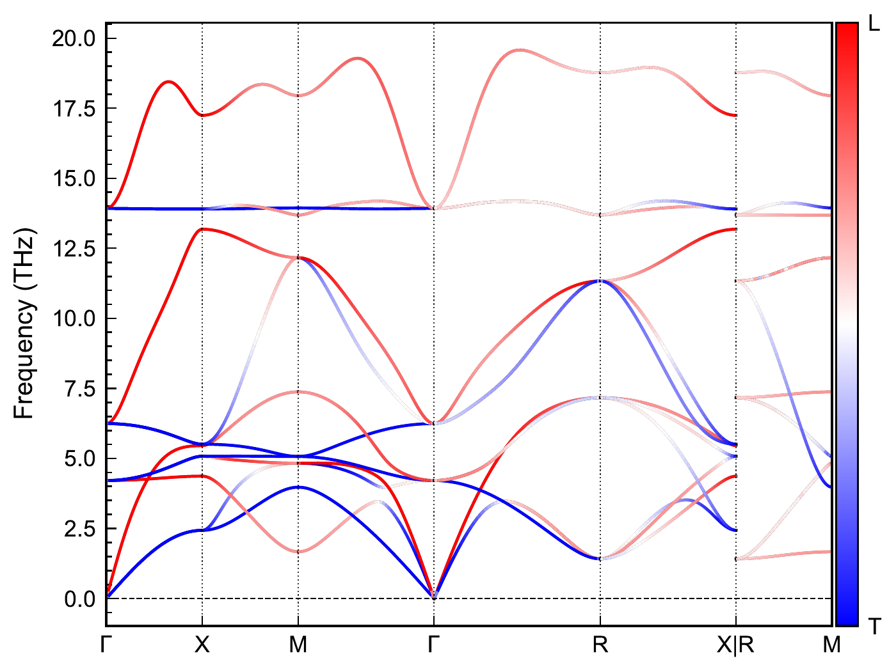

crystod-phonon#
Phonon analyses on top of phonopy data
(POSCAR + FORCE_SETS, or FORCE_CONSTANTS with --readfc, or
phonopy_params.yaml). Six mode flags: --irreps, --fatband, --lt,
--vector, --modulation, --vibration.
21. Phonon irreducible representations (--irreps)#
Example directory: example/21_phonon_irrep (testsuite section 21)
Label the phonon modes at the special q points with their irreducible
representations and write phonon_irreps.yaml:
crystod-phonon --irreps -c example/test_POSCARs/221_PPOSCAR_SrTiO3 --dim="4 4 4" --readfc
The resulting phonon_irreps.yaml lists, for every special q point, the modes
grouped into degenerate sets with their CDML irrep labels and frequencies
(cubic SrTiO3 with 4x4x4 force constants — note the antiferrodistortive soft
mode at R appearing as an imaginary, negative-frequency R5- triplet):
space_group: Pm-3m
irreps:
- q_label: GM
q_position: [0.0, 0.0, 0.0]
- # 1 2 3
irrep_label: ['GM4-(3)']
frequency: 0.0000003685
- # 4 5 6
irrep_label: ['GM4-(3)']
frequency: 2.6629186664
- # 7 8 9
irrep_label: ['GM4-(3)']
frequency: 4.7144147359
- # 10 11 12
irrep_label: ['GM5-(3)']
frequency: 7.3464877515
- # 13 14 15
irrep_label: ['GM4-(3)']
frequency: 15.3054117938
- q_label: R
q_position: [0.5, 0.5, 0.5]
- # 1 2 3
irrep_label: ['R5-(3)']
frequency: -1.0867090338
...
22. Element-projected phonon fatbands (--fatband)#
Example directory: example/22_phonon_fatband (testsuite section 22)
Plot phonon fatbands colored by the element-projected phonon density (sum of
squared eigenvector components over each element’s atoms), directly from
POSCAR + FORCE_SETS (or FORCE_CONSTANTS with --readfc):
cd example/22_phonon_fatband/ScF3_Pm-3m
crystod-phonon --fatband -c 221_PPOSCAR_ScF3 --dim 4 4 4
The space group is detected, the high-symmetry k-path is generated automatically
with seekpath, the phonon band structure is computed with eigenvectors and band
connection via the phonopy API (no band.yaml needed), and one
fatband_<element>.pdf is written per element, colored with the VESTA default
element colors and with dot sizes proportional to the projected weight. For ScF3
this cleanly separates the F-dominated soft rotational branches (R/M points)
from the Sc-dominated mid-frequency bands.

fatband_F.pdf for ScF3 (4x4x4 FORCE_SETS): the F-projected weight (shading)
concentrates on the soft rotational branches around R and M and on the
high-frequency stretching bands, while the Sc-dominated mid-frequency bands
stay unshaded (they appear in fatband_Sc.pdf instead).#
Options: --element F restricts the output to one element; --nac applies the
non-analytical term correction (LO/TO splitting) using a BORN file in the
current directory; --band/--band-labels supply a manual k-path instead of
seekpath; --npoints sets the q-point density per path leg (default 51);
--projection-direction "0 0 1" projects the displacements onto a direction in
reduced coordinates before squaring.
Plotting style based on script/phonon_fatband.py by Hiroki Koiso.
crystod-phonon --fatband -c 221_PPOSCAR_ScF3 --dim 4 4 4 --nac
NAC is applied only when --nac is given. With --nac the output files are
named fatband_nac_<element>.pdf, so corrected and uncorrected fatbands can
coexist side by side.

fatband_nac_F.pdf — the same F-projected fatband with the non-analytical
term correction. Comparing with the uncorrected figure above, the LO/TO
splitting lifts the highest F-dominated branch at Gamma from 13.9 to
20.5 THz, while the zone-boundary soft modes at R and M are untouched (the
correction acts only in the long-wavelength limit). The plot title carries an
“(NAC)” tag.#
23. Longitudinal/transverse-resolved phonon bands (--lt)#
Example directory: example/23_phonon_lt (testsuite section 23)
Plot the phonon band structure colored by the longitudinal/transverse character of each mode (red = longitudinal, blue = transverse, white = mixed or Gamma):
cd example/23_phonon_lt/ScF3_Pm-3m
crystod-phonon --lt -c 221_PPOSCAR_ScF3 --dim 4 4 4
crystod-phonon --lt -c 221_PPOSCAR_ScF3 --dim 4 4 4 --nac
The longitudinal character of a mode is
sqrt(sum_atoms |q_hat . e_atom|^2), i.e. the norm of the eigenvector
projection onto the propagation direction (valid along any path direction,
including diagonal segments such as GM-R). Output: phonon_band_LT.pdf, or
phonon_band_LT_nac.pdf with --nac — with NAC the split-off LO branches show
up as purely red. Based on script/LT_phonon_band.py maintained by Hiroki
Koiso, after Qijing Zheng.
{kind=link}

phonon_band_LT.pdf for ScF3: red = longitudinal, blue = transverse,
white = mixed. Along GM-X the acoustic set splits visibly into one red L
branch and two blue T branches; the flat band near 14 THz is purely
transverse throughout the zone.#
24. Phonon eigenvector visualization (--vector)#
Example directory: example/24_phonon_vector (testsuite section 24)
Diagonalize the dynamical matrix directly at the selected q point via the
phonopy API, list the modes with their frequencies and irrep labels, and export
the selected eigenvectors as .vesta files with per-atom displacement arrows:
cd example/24_phonon_vector/Si_Fd-3m
# List the modes at GM and export ALL of them as individual VESTA files;
# the mode table is also saved as phonon_modes_Si_GM.txt
crystod-phonon --vector --dim "4 4 4" -c 227_PPOSCAR_Si --qpoint GM
# Export one optical GM5+ mode only (mode numbers are 1-based)
crystod-phonon --vector --dim "4 4 4" -c 227_PPOSCAR_Si --qpoint GM --mode 4
# Multiple selected modes are summed into one displacement pattern
crystod-phonon --vector --dim "4 4 4" -c 227_PPOSCAR_Si --qpoint GM --mode 4 5 6
# X point: the commensurate supercell (2x1x2) and Bloch phases are applied automatically
crystod-phonon --vector --dim "4 4 4" -c 227_PPOSCAR_Si --qpoint X --mode 1 --readfc
# Conventional-cell output (POSCAR_Si_GM_mode4+5+6_GM5+_conv.vesta etc.)
crystod-phonon --vector --dim "4 4 4" -c 227_PPOSCAR_Si --qpoint GM --mode 4 5 6 --conventional
The terminal shows the mode table (also saved as phonon_modes_Si_GM.txt) and
one line per exported file:
Space group: Fd-3m (#227)
Available high-symmetry q-points:
GM [0.0, 0.0, 0.0]
X [0.5, 0.0, 0.5]
L [0.5, 0.5, 0.5]
W [0.5, 0.25, 0.75]
Selected q-point: GM = [0.0, 0.0, 0.0]
Phonon modes at q = GM
Mode Freq (THz) Irrep
----------------------------------------
1 0.0000 GM4-(3)
2 0.0000 GM4-(3)
3 0.0000 GM4-(3)
4 14.9571 GM5+(3)
5 14.9571 GM5+(3)
6 14.9571 GM5+(3)
Mode table written to: phonon_modes_Si_GM.txt
No --mode given; exporting all 6 modes as individual VESTA files.
Commensurate supercell for visualization: 1x1x1
+ mode 1: GM4-(3), 0.0000 THz
Mode 1 written to: POSCAR_Si_GM_mode1_GM4-.vesta
...
+ mode 6: GM5+(3), 14.9571 THz
Mode 6 written to: POSCAR_Si_GM_mode6_GM5+.vesta
Output files are auto-named POSCAR_<formula>_<qlabel>_mode<N>_<irrep>.vesta
(mode numbers zero-padded so ls lists them in order) and open directly in
VESTA, showing the equilibrium structure with
red arrows for the real part of the mass-weighted eigenvector displacement.
Degenerate modes are exported as symmetry-adapted eigenvectors: the
dynamical matrix is block-diagonalized in the spgrep irrep-projected basis (the
same construction as --modulation), so that, e.g., the three degenerate GM5+
optical modes of Si point exactly along the cubic axes instead of the arbitrary
tilted combinations a plain eigensolver returns. The exported vectors are exact
eigenvectors of the phonopy dynamical matrix (verified internally against the
phonopy spectrum).
--conventional outputs the structure and arrows in the conventional cell
(_conv file-name suffix); for fractional q points the conventional cell is
multiplied until the Bloch phase is commensurate. --qpoint accepts a
high-symmetry label (GM, X, L, …) or three primitive reciprocal
coordinates (fractions allowed). When --mode is omitted, ALL modes are
exported as individual VESTA files. Arrows are rescaled so that the largest
total displacement equals --amplitude (default 1.5 Angstrom).
25. Symmetry-adapted phonon modulation (--modulation)#
Example directory: example/25_modulation (testsuite section 25)
Generate modulated (displaced) structures from symmetry-adapted phonon modes:
crystod-phonon --modulation --yaml example/25_modulation/ScF3_Pm-3m/phonopy_params.yaml \
--qpoint 0.5 0.5 0.5 --mode 1 2 3 --amplitude 0.3
When --mode is omitted, only the mode table (mode number, frequency, irrep,
degeneracy) and the star of q are printed, so you can inspect the modes at a q
point first and then choose which mode(s) to apply:
crystod-phonon --modulation --yaml example/25_modulation/ScF3_Pm-3m/phonopy_params.yaml --qpoint 0.5 0.5 0.5
Phonon modes at q = [0.5 0.5 0.5]
Mode Freq (THz) Irrep Degeneracy
--------------------------------------------------
1 1.4169 R4+(3) 3
2 1.4169 R4+(3) 3
3 1.4169 R4+(3) 3
4 7.1689 R5+(3) 3
5 7.1689 R5+(3) 3
6 7.1689 R5+(3) 3
7 11.3334 R4-(3) 3
8 11.3334 R4-(3) 3
9 11.3334 R4-(3) 3
10 13.6922 R3+(2) 2
11 13.6922 R3+(2) 2
12 18.7661 R1+(1) 1
Star of q (arms related by the space-group rotations):
|G| = 48, |G_k| = 48, |star of k| = 1
arm 1: k = [+0.5, +0.5, +0.5]
No --mode given. Choose mode number(s) from the table above and rerun with
--mode (and optionally --amplitude) to generate a modulated structure.
The soft octahedral-rotation triplet of ScF3 shows up as the lowest R4+ modes
1-3; applying all three with equal amplitudes (--mode 1 2 3) condenses the
(a,a,a) direction and the printed space group of the modulated structure is
R-3c, matching the --supergroup Pm-3m --irrep R4+ isotropy table of
crystod-group.
If phonopy_params.yaml exists in the current directory, --yaml can be
omitted. If a single amplitude is given, it is applied to all selected modes.
When --output is omitted, the file is auto-named
MPOSCAR_{q}_{mode}_{irrep}_{subgroup} — e.g. MPOSCAR_R_mode1+2+3_R4+_R-3c.
The space group of the modulated structure is detected and printed
(e.g. R4+(a,a,a) of Pm-3m ScF3 gives R-3c).
Different q points can be combined with numbered argument sets
(--qpoint1/--mode1/--amplitude1, --qpoint2/--mode2/--amplitude2, …):
crystod-phonon --modulation \
--yaml example/25_modulation/ScF3_Pm-3m/phonopy_params.yaml \
--qpoint1 0 0.5 0.5 --mode1 1 --amplitude1 0.3 \
--qpoint2 0.5 0 0.5 --mode2 1 --amplitude2 0.3 \
--qpoint3 0.5 0.5 0 --mode3 1 --amplitude3 0.3 \
--output POSCAR_multi_q_arms
The star of q is displayed for each selected q point, which is useful when combining arms of the same star in multi-q modulations.
26. Symmetry-only vibration bases (--vibration)#
Example directory: example/26_vibration (testsuite section 26)
List the available high-symmetry q points and irrep-grouped vibration spaces from crystal symmetry alone (no force data needed):
crystod-phonon --vibration -c example/test_POSCARs/221_PPOSCAR_ScF3 --qpoint R
crystod-phonon --vibration -c example/test_POSCARs/221_PPOSCAR_ScF3 --qpoint 0.5 0.5 0
Available high-symmetry q-points:
GAMMA [0.0, 0.0, 0.0]
R [0.5, 0.5, 0.5]
M [0.5, 0.5, 0.0]
X [0.0, 0.5, 0.0]
X_1 [0.5, 0.0, 0.0]
Selected q-point: R = [0.5, 0.5, 0.5]
Number of irrep-grouped vibration spaces: 5
Irrep-grouped vibration spaces:
Mode Space 1: irrep = R1+(1), dimension = 1, component numbers = 1..1
Mode Space 2: irrep = R3+(2), dimension = 2, component numbers = 1..2
Mode Space 3: irrep = R4+(3), dimension = 3, component numbers = 1..3
Mode Space 4: irrep = R4-(3), dimension = 3, component numbers = 1..3
Mode Space 5: irrep = R5+(3), dimension = 3, component numbers = 1..3
These are the same irreps as the --modulation mode table above — but obtained
from crystal symmetry alone, without any force data (the 12 modes at R group
into 1 + 2 + 3 + 3 + 3 dimensions).
Select one symmetry-allowed mode component, build the commensurate supercell, and export a displaced structure:
crystod-phonon --vibration \
-c example/test_POSCARs/221_PPOSCAR_ScF3 \
--qpoint R \
--mode-index 3 \
--component-index 1 \
--output POSCAR_vibration
--qpoint accepts either three primitive reciprocal coordinates or a
high-symmetry label. Add --export-npz mode_data.npz to save positions,
displacement vectors, symbols, and lattice for notebook-side visualization
(python3 vibration_viewer.py --npz mode_data.npz converts or inspects it).